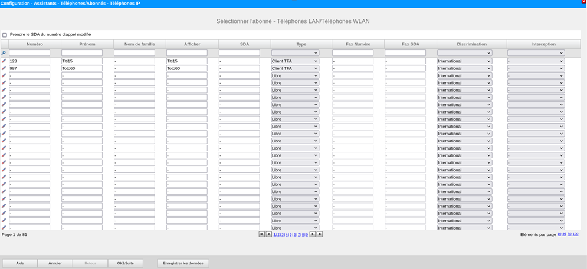

Contexte :
Ce projet a été réalisé durant une série de 3 Travaux Pratiques de 3 heures chacun en binôme.
.

Objectif :
Durant la série de 3 Travaux Pratiques de 3h, l'objectif était de configurer un serveur d'appel Unify afin de simuler un réseau téléphonique d'entreprise sur IP.
.
Travail réalisé
Tout d'abord, j'ai dû brancher les téléphones fixes sur le switch de la salle via des câbles RJ45.
Je me suis ensuite connecté à l'interface Web du serveur d'appel Unify grâce à son adresse IP. Une fois connecté, il a fallu que je configure des abonnés en leur donnant un nom, un numéro et le type de téléphone associé.
Une fois que les abonnés ont été créés, j'ai pu configurer mes téléphones afin de leur attribuer un numéro de téléphone correspondant à l'abonné voulu.
Une fois mes téléphones configurés, j'ai testé mon réseau en apppelant les téléphones entre eux.
Ensuite j'ai pu implémenter plusieurs services tels qu'un Trunk SIP afin de pouvoir appeler des téléphones extérieurs à mon réseau ou encore un répondeur.
J'ai également pu mettre en place des services comme la messagerie ou la redirection d'appel
.
Résultat :
Cette série de Travaux Pratiques m'a permis de mieux comprendre les notions vues en cours et de les mettre en pratique. J'ai pu obtenir des compétences dans le domaine de la Téléphonie sur IP, ce qui m'a permis d'obtenir 14 à l'examen pratique.